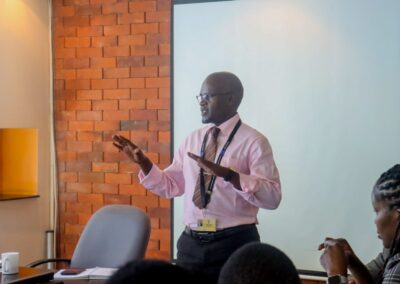

Upholding Dignity Behind Bars: Commissioner Dr. Dennis Wamalwa Leads Human Rights Audit Across Kenyan Prisons

In a week marked by powerful emotions and renewed commitments, the Kenya National Commission on Human Rights (KNCHR), under the leadership of Commissioner Dr. Dennis Wamalwa, conducted a series of critical visits to three correctional facilities—Kitengela GK Prison, Machakos Prison, and Kajiado Prison—as part of the ongoing second phase of the audit on the status of migrants in detention and other holding facilities in Kenya.
The fieldwork, conducted on April 14th (Kitengela and Machakos Prisons) and continuing with Kajiado Prison yesterday, was a vital step toward evaluating the progress made since the 2018/2019 audit and the 2020 publication of A Survey Report on the Status of Migrants in Detention Places and Other Holding Facilities – Kenya. This second phase builds on past findings and aims to assess existing conditions using Kenyan law, the Mandela Rules, and international human rights frameworks to which Kenya is a signatory.
Commissioner Dennis exhausted after long day work 
A Heartfelt Acknowledgement of Hospitality and Reform
What stood out most across all sites visited was the overwhelming hospitality and genuine cooperation from prison leadership and staff. These institutions demonstrated openness, commitment, and an impressive embrace of positive change. The Commission commends this transformation and urges the Government of Kenya to publicly recognize and support the ongoing positive reforms within the country’s correctional system.
Such recognition will not only boost morale among officers and inmates alike but also reinforce the importance of human dignity in custodial settings.
Team of Change Agents: Who Walked the Journey
At Kitengela GK Prison (April 14th), the Commission’s delegation included:
-
Briavo, Human Rights Officer
-
Annmarie, Director, Research, Advocacy, and Outreach, KNCHR
-
Mr. Charles Mokaya, Deputy In-Charge
-
Commissioner Dr. Dennis Wamalwa, KNCHR
-
Mr. Hassan, Officer
-
Madam Esther, Human Rights Officer
-
Elijah Kandie, Senior Human Rights Officer, KNCHR
At Machakos Prison (April 14th), the delegation engaged with:
-
Mr. Wilson, Officer In-Charge
-
Madam Lydia Omondi, Welfare Officer
At Kajiado Prison (visited yesterday), the Commissioner was joined by:
-
Mr. Benjamin Sang, Deputy In-Charge
-
ASP Maureen, Deputy In-Charge
-
Mr. Dennis , Welfare Officer
-
Ms. Antoinetta, Welfare Officer
From Data to Dignity: The Audit’s Broader Mission
This initiative is part of KNCHR’s strategic focus on promoting safe, orderly, and rights-based migration, while pushing for institutional reforms that humanize correctional spaces and protect vulnerable populations, particularly migrants and victims of trafficking.
The key objectives include:
-
Assessing the implementation of previous recommendations
-
Identifying gaps in policy, resources, and officer training
-
Promoting alternatives to migrant detention
-
Highlighting welfare needs of both detainees and prison staff
-
Reinforcing alignment with human rights treaties and national legal frameworks
Commissioner Dennis Wamalwa actively engaging with Officers at the station.
A Meaningful Conclusion: From Prisons to Policy
Culminating this impactful week, Commissioner Dr. Wamalwa paid a courtesy call today to Prisons Headquarters at Magereza House, where he held a high-level conversation with Mr. C.M. Makokha, the Assistant Commissioner General of Prisons (ACGP). This final engagement was more than symbolic—it was a bridge between field realities and policy-level discourse.
In appreciation, the Commissioner presented Mr. Makokha with an official KNCHR notebook, a token of respect and partnership. Accompanying him was his colleague, Geoffrey Werumbi, whose continued commitment to justice and human rights has been integral throughout the audit.
This meeting served to reinforce institutional collaboration and carry the stories and insights from the field straight to the corridors of decision-making.
Conclusion: Reform is Real, and It’s Happening
The Kenyan prison system is showing clear signs of transformation—and it deserves both recognition and support. The Kenya National Commission on Human Rights reaffirms its commitment to ensuring every person, regardless of their status, is treated with dignity and afforded their rights.
With Commissioner Dr. Dennis Wamalwa at the helm, this audit is not just about compliance—it's about compassion, accountability, and lasting change. Kenya is on the path to becoming a regional model for rights-based detention, and with continued collaboration, we will get there.
Handing over of the official KNCHR notebook to Mr. C.M. Makokha, the Assistant Commissioner General of Prisons (ACGP).
Light moments with Mr. C.M. Makokha, the Assistant Commissioner General of Prisons (ACGP), and KNCHR collegue